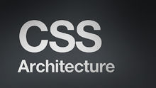

层叠样式表(英文全称：Cascading Style Sheets)是一种用来表现HTML（标准通用标记语言的一个应用）或XML（标准通用标记语言的一个子集）等文件样式的计算机语言。CSS不仅可以静态地修饰网页，还可以配合各种脚本语言动态地对网页各元素进行格式化。[1]
CSS 能够对网页中元素位置的排版进行像素级精确控制，支持几乎所有的字体字号样式，拥有对网页对象和模型样式编辑的能力。[2]
1990年，Tim Berners-Lee和Robert Cailliau共同发明了Web。1994年，Web真正走出实验室。[3]

从HTML被发明开始，样式就以各种形式存在。不同的浏览器结合它们各自的样式语言为用户提供页面效果的控制。最初的HTML只包含很少的显示属性。
随着HTML的成长，为了满足页面设计者的要求，HTML添加了很多显示功能。但是随着这些功能的增加，HTML变的越来越杂乱，而且HTML页面也越来越臃肿。于是CSS便诞生了。
1994年哈坤·利提出了CSS的最初建议。而当时伯特·波斯（Bert Bos）正在设计一个名为Argo的浏览器，于是他们决定一起设计CSS。
其实当时在互联网界已经有过一些统一样式表语言的建议了，但CSS是第一个含有“层叠”丰意的样式表语言。在CSS中，一个文件的样式可以从其他的样式表中继承。读者在有些地方可以使用他自己更喜欢的样式，在其他地方则继承或“层叠”作者的样式。这种层叠的方式使作者和读者都可以灵活地加入自己的设计，混合每个人的爱好。
哈坤于1994年在芝加哥的一次会议上第一次提出了CSS的建议，1995年的www网络会议上CSS又一次被提出，博斯演示了Argo浏览器支持CSS的例子，哈肯也展示了支持CSS的Arena浏览器。
同年，W3C组织（WorldWideWebConsortium）成立，CSS的创作成员全部成为了W3C的工作小组并且全力以赴负责研发CSS标准，层叠样式表的开发终于走上正轨。有越来越多的成员参与其中，例如微软公司的托马斯·莱尔顿(ThomasReaxdon)，他的努力最终令InternetExplorer浏览器支持CSS标准。哈坤、波斯和其他一些人是这个项目的主要技术负责人。
1996年底，CSS初稿已经完成，同年12月，层叠样式表的第一份正式标准（Cascading style Sheets Level 1）完成，成为w3c的推荐标准。
1997年初，W3C组织负责CSS的工作组开始讨论第一版中没有涉及到的问题。其讨论结果组成了1998年5月出版的CSS规范第二版。
记事本：使用Windows系统自带的记事本可以编辑网页。只需要在保存文档时，以.html为后缀名进行保存即可。[6]
Dreamweaver：它与Flash、Fireworks并称网页三剑客。Dreamweaver是集网页制作和管理网站于一身的所见即所得网页编辑器，它是第一套针对专业网页设计师特别开发的视觉化网页开发工具，利用它可以轻而易举地制作出充满动感的网页。